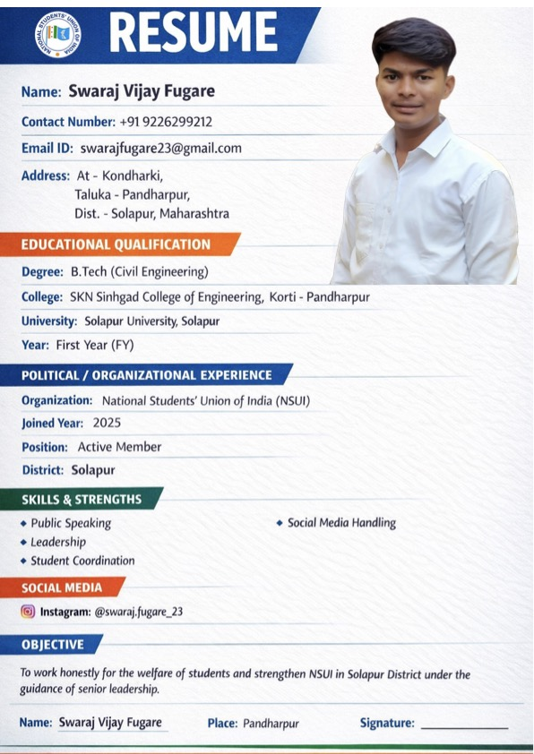

Current
B.Tech Civil Engineering
Degree: B.Tech (Civil Engineering). College: SKN Sinhgad College of Engineering, Korti-Pandharpur. University: Solapur University, Solapur. Year: First Year (FY).
Resume
Structured from the attached resume PDF: education, student organization experience, skills, objective, and verified contact details.

Timeline
Degree: B.Tech (Civil Engineering). College: SKN Sinhgad College of Engineering, Korti-Pandharpur. University: Solapur University, Solapur. Year: First Year (FY).
Appointment letter issued under Solapur District NSUI letterhead updates Swaraj's position to Vice President of Solapur District.
Organization: National Students' Union of India (NSUI). District: Solapur. Work focus: student welfare, leadership, coordination, and public communication.
Public GitHub profile created in May 2023 with repositories spanning HTML, Python, Telegram bot concepts, code editor ideas, and profile configuration.
Matoshree Collection is positioned as an online classes brand for Aari Work, Fabric Painting, Resin Art, Candle Making, and other creative skills.
Resume sections
B.Tech Civil Engineering, First Year, SKN Sinhgad College of Engineering, Korti-Pandharpur, Solapur University.
Political / organizational experience as Vice President of Solapur District NSUI, with appointment letter dated 15 April 2026.
Public speaking, leadership, student coordination, and social media handling.
To work honestly for the welfare of students and strengthen NSUI in Solapur District under senior leadership.
Email: swarajfugare23@gmail.com. Phone: +91 9226299212. Address: Kondhalki, Taluka Pandharpur, District Solapur, Maharashtra.
Instagram: @swaraj.fugare_23. GitHub: swarajfugare. LinkedIn and X are linked across the site.